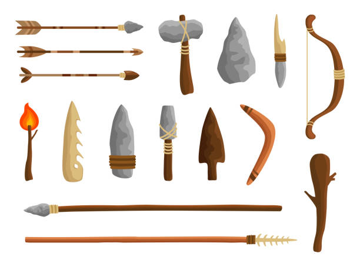
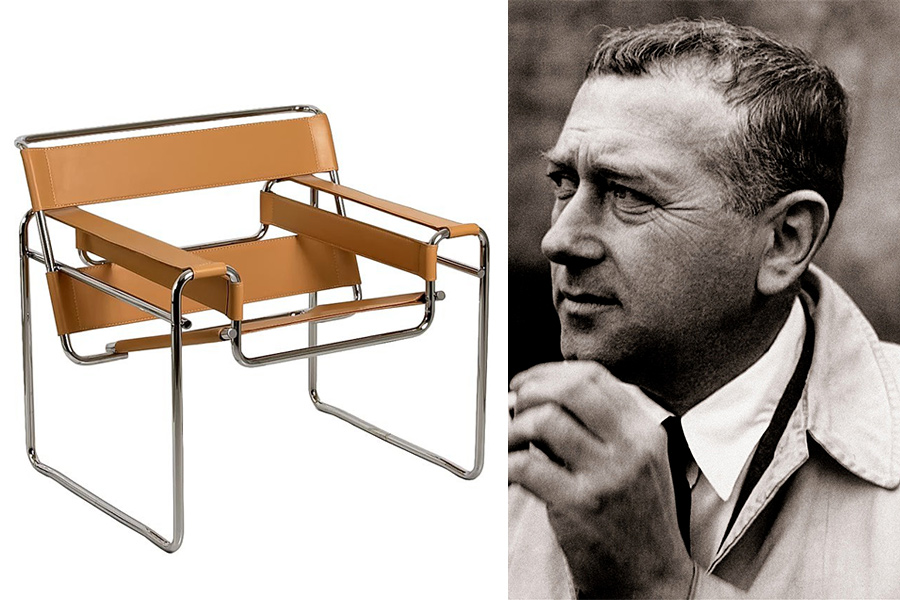

Historia del diseño  Si tratamos de rastrear los orígenes del diseño industrial, nos veremos forzados a retrotraernos hasta la propia necesidad de crear objetos o herramientas que han servido al ser humano desde sus inicios. Lo más cercano que podemos encontrar en tiempos antiguos es la figura del artesano, quien se dedicaba a crear objetos de la vida cotidiana que eran únicos, cuyo diseño y técnicas de elaboración eran resguardadas con recelo por el propio artesano, ya que el valor de sus artesanías venía dado por la autenticidad de cada uno de sus piezas. Esta nueva actividad profesional el Diseño Industrial, si bien está enmarcada por la estética, no pertenece al campo del arte, sino de la tecnología, su actividad no consiste (como sucedía antes) en embellecer los productos agregándoles ornamentos que nada tienen que ver con su funcionalidad, sino más bien en lograr una unidad entre tecnología y estética en la misma etapa de concepción del producto, para lograr que el objeto, además de ser funcional, sea agradable a la vista. El Diseño Industrial busca que el diseño de objetos sea un acto creativo que, concilie la función utilitaria con un componente estético, y además abarque todos los factores en juego: formales, funcionales, estéticos, tecnológicos. El avance tecnologico de un pais siempre ha signifivado desarrollo y poder. Hoy en dia es igual, los paises mas desarrollados dependen de sus avances tecnologicos, dando espacio a la importancia de la creatividad que pueda competir con las demas naciones. Eldiseño industrial lo definimos como la fabricion de producots industriales en forma seriada enfocandose en la produccion de bienes, en la cual es vital el diseño de la forma y las caracteristicas de un producto desde sus inicios. Siendo a si de vital importancia para las naciones, debido a su ligamento con las revoluciones industriales llegando a ser su primer punto de inflexion enla gran exposicion de londer en 1851.
Hector Esrawe Héctor Esrawe nació en 1968 en la Ciudad de México. Se graduó de la Universidad Iberoamericana (UIA) en 1992 con el título de Diseñador Industrial. Los diseños de Esrawe comprenden gran variedad de tipologías, desde mobiliario, piezas de edición limitada, interiorismo, arquitectura, instalaciones en el espacio público y museografía.Su trabajo le ha valido reconocimientos internacionales -se encuentra en el Top 100 de Creativos 2021 de la revista AD Alemania- y premios como: Estudio de Diseño de Interiores del Año por Dezeen Awards Hella Jongerius La diseñadora Hella Jongerius se ha hecho famosa por la forma en la que mezcla industria y artesanía, alta y baja tecnología, lo tradicional y lo contemporáneo. En 1993 fundó el estudio de diseño Jongeriuslab en el que ha desarrollado proyectos independientes y ha creado productos para grandes clientes como Maharam, Danskina, IKEA y KLM. Para Vitra, la diseñadora holandesa ha creado piezas tan características como el sofá Polder y la silla East River. En su trabajo con tejidos, cerámicas y muebles, Jongerius ha abordado con coherencia la importancia de los colores y superficies en el diseño contemporáneo. Ha desarrolló la Vitra Colour & Material Library, un sistema que permite combinar de forma versátil materiales y colores en la extensa colección de productos de la empresa. Hella Jongerius ha escrito un libro sobre esta compleja labor titulado «I don't have a favourite colour». Jasper morrison El británico Jasper Morrison es un veterano protagonista del diseño industrial internacional cuyo rumbo estético es el de creaciones sencillas que prestan atención a cada detalle, a los procesos de fabricación que lo soportan y al rigor de un minimalismo concebido con gran inteligencia. Sus materiales predilectos son el aluminio y la madera contrachapada. famoso por su enfoque minimalista, que se formó a temprana edad. “Mi abuelo había decorado una habitación de su casa al estilo escandinavo de la década de 1960, pisos descubiertos, alfombras blancas de pelo largo, y ahí estaba un tocadiscos Braun con paneles laterales de madera. Estaba impresionado por la habitación y por el tocadiscos”, recuerda.  Marcel Breuer Fue un arquitecto y diseñador modernista de fama mundial considerado como uno de los principales defensores del estilo internacional. Este arquitecto nacido el 21 de Mayo de 1902 en Pécs, Hungría, fue un producto de la famosa escuela de diseño «Bauhaus» en Weimar.La devoción de Marcel Breuer por el peso liviano, incluso ingrávido, fue anunciada en su búsqueda decidida de formas nuevas y cada vez más minimizadas para muebles durante sus años como estudiante en la Bauhaus."La estructura no es solo un medio para una solución. También es un principio y una pasión" Philippe Starck El inventor de tendencias más famoso de todos los tiempos ha sido un visionario en su continua redefinición de lo que el diseño debe ser. Afinales de junio, cuando cada año escolar terminaba, la madre hacía traer un camión de arena al garaje donde Philippe pasaría la mayor parte del verano creando un mundo de calles, casas, pueblos y muebles con la arena. Sus padres se habían divorciado cuando tenía 6 años y aquella segunda casa y sobre todo el inmenso mesón y las herramientas del taller de su abuelo fueron la mayor distracción durante su infancia. El tiempo mostró el lado positivo de aquella solitaria infancia: Aquel niño hastiado devino en el diseñador más prolífico de las últimas décadas. Hoy Philippe Starck tiene 72 años y, tras una exitosísima carrera de más de cincuenta años, ha producido unas 10.000 creaciones, que van desde un cepillo de dientes hasta los habitáculos de naves y estaciones espaciales para Axiom Space y Virgin Galactic.